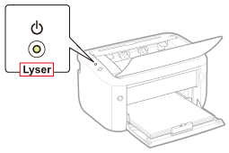
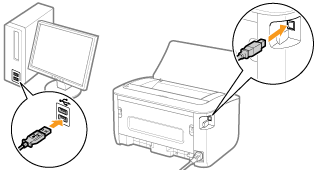
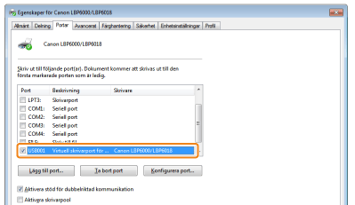
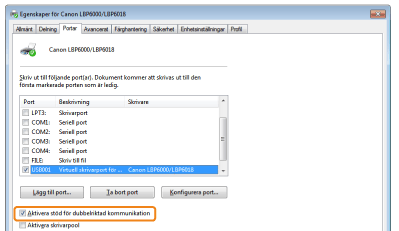

Se problemet som anges efter nedanstående frågor om det inte går att skriva ut när skrivaren är ansluten till datorn med en USB-kabel.
<Fråga 1> Är skrivaren påslagen? (Är  (Ström) indikatorn på?)
(Ström) indikatorn på?)
(Ström) indikatorn på?)
|
PÅ
|
Till <Fråga 2>
|
|
AV
|
Slå på skrivaren.
|
|
Kan inte slås på
|
<Fråga 2> Blinkar  (Papper) indikatorn?
(Papper) indikatorn?
(Papper) indikatorn?
|
Blinkar
|
Fyll på lämpligt papper och tryck sedan på [
 ] knappen (Papper). ] knappen (Papper). |
|
Blinkar ej
|
Till <Fråga 3>
|
<Fråga 3> Är USB-kabeln rätt ansluten?

|
Ansluten
|
Försök med följande.
Om du använder en hubb: Anslut skrivaren direkt till datorn.
Om du använder en lång USB-kabel: Byt ut den mot en kort.
Om du har tillgång till en annan USB-kabel: Använd den.
 Om det inte går att skriva ut: Fortsätt till <Fråga 4>. |
|
Ej ansluten
|
Anslut kabeln på rätt sätt.
|
<Fråga 4> Kan du skriva ut en testsida i Windows?

|
Kan skriva ut
|
Det är inget problem med skrivaren eller drivrutinen.
Kontrollera utskriftsinställningarna i programmet.
|
|
Kan inte skriva ut
|
Till <Fråga 5>
|
<Fråga 5> Har du valt rätt port?

|
Vald
|
Till <Fråga 6>
|
|
Ej vald
|
Välj rätt port.
|
|
Det går inte att hitta rätt port.
|
Installera om skrivardrivrutinen.
|
<Fråga 6> Har dubbelriktad kommunikation aktiverats?

|
Aktiverad
|
Till <Fråga 7>
|
|
Inte aktiverad
|
Aktivera den dubbelriktade kommunikationen och starta om datorn och skrivaren.
|
<Fråga 7> Försök med följande.
Stäng av residenta program, inklusive säkerhetsprogram.
Om andra USB-enheter är anslutna till datorn: Koppla loss de som inte behövs.
Om drivrutin eller program för någon annan USB-enhet har installerats på datorn: Avinstallera de som inte behövs.
Anslut USB-kabeln till en annan USB-port på datorn.
Anslut skrivaren till en annan dator med en USB-kabel.
Fortsätt till <Fråga 8> om det inte går att skriva ut.
<Fråga 8> Installera om skrivardrivrutinen.
Fortsätt till <Fråga 9> om det inte går att skriva ut.
<Fråga 9> Avinstallera USB-klassdrivrutinen och installera om skrivardrivrutinen.
Kontakta din lokala auktoriserade Canon-återförsäljare om det inte går att skriva ut.